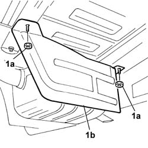
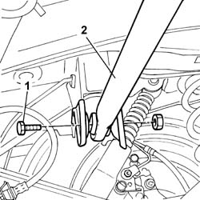
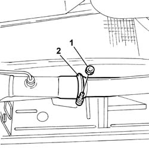
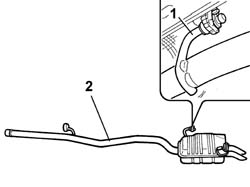

1076B20 REAR EXHAUST SILENCER - R + R
- Path
- Procedures > 10 ENGINE > 1076 EXHAUST PIPES AND SILENCERS > 1076B EXHAUST PIPES AND SILENCERS > 1076B20 REAR EXHAUST SILENCER - R + R
- Kind
- repair procedure (removal / refitting; the operation number is the code)
- Applies to
- engines: 2.0 16v, 2.0 16V JTD, 2.2 16V JTD; all production periods
- Interactive page
- https://sloeber94.github.io/elrnDB-fUlss/en/#/179007086
Applies to: engines: 2.2 16V JTD; all production periods
 Removing
Removing
 Refitting
RefittingPosition the vehicle on a lift.
Remove the spare wheel.
1. Undo the fixing nuts (1a) and remove the bulkhead (1b).

Applies to: engines: 2.2 16V JTD; all production periods
1. Undo the fixing bolt.
2. Move the strut joining the bodyshell to the rear axle aside.

Applies to: engines: 2.2 16V JTD; all production periods
1. Undo the nut.
Open the retaining band.

Applies to: engines: 2.2 16V JTD; all production periods
1. Release the silencer from the rubber fastenings.
2. Remove the silencer.

Applies to: engines: 2.2 16V JTD; all production periods
Refitting
RemovingPosition the silencer in its seat and secure to the rubber fastenings.
Tighten the nut and close the retaining band.
Fit the bulkhead and tighten the nuts.
Position the strut joining the body to the rear axle and tighten the bolt.
Fit the spare wheel.
Remove the vehicle from the lift.
Applies to: engines: 2.0 16v; all production periods
See in Op. 1076B10
Applies to: engines: 2.0 16V JTD; all production periods